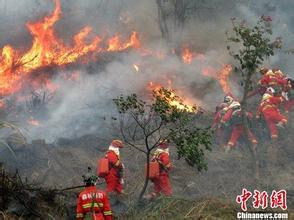
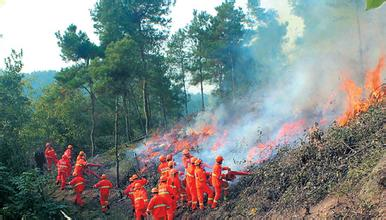
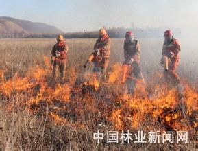
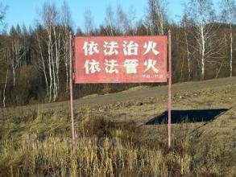
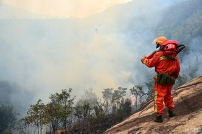

抚宁林业网
秦皇岛市抚宁区林业局门户网站
首页
林业概况
政务公开
政策法规
工作动态
互动交流
公众服务
机构设置
•抚宁区林业局领导简介
•抚宁区林业局服务电话
•抚宁区林业局位置图
•抚宁区林业局主要职责
•抚宁区林业局内设机构
•抚宁区森林公安局主要职责
行风党建
•中国共产党第十八届中央委员会第六次全体会议公报
•《中国共产党问责条例》逐条解读
•抚宁区林业局组织开展专题党课体验活动
•抚宁区林业局召开“两学一做”学习教育活动动员大会
•抚宁区林业局集中开展纪检专项检查活动
•抚宁区林业局召开机关作风整顿动员会
公告公示
•秦皇岛市林业局2015年行政处罚信息公示 [2016-01-19]
•秦皇岛市林业局关于开展2015年度执法质量考评的通知 [2015-12-09]
•秦皇岛市绿化委员会办公室关于推荐全国绿化先进集体候选单位的公示 [2015-09-10]
•秦皇岛市林业局2015年政府信息公开年度报告 [2016-02-04]
•我市启动高标准经济林园区建设项目 [2016-01-07]
•关于推荐全国生态建设突出贡献奖先进集体和先进个人的公示 [2016-05-03]
森林消防





抚宁区森林消防大队
以下是消防大队简介内容